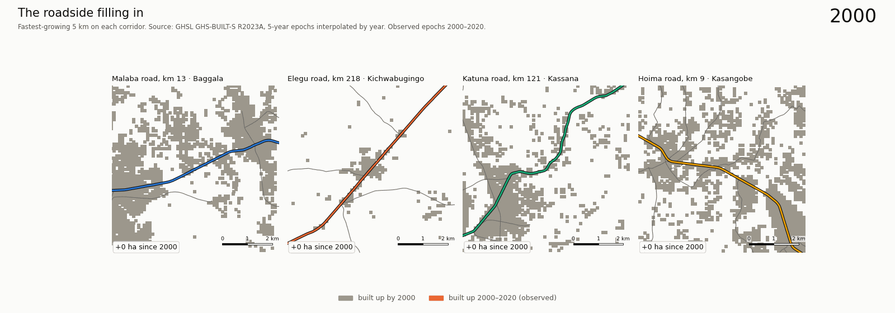
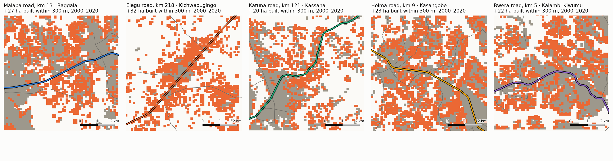
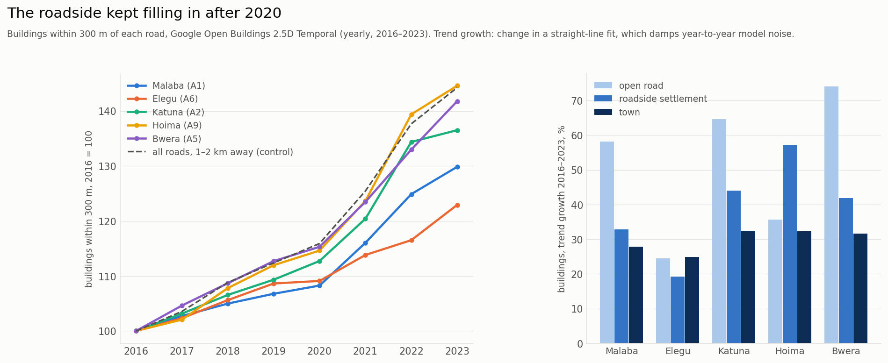
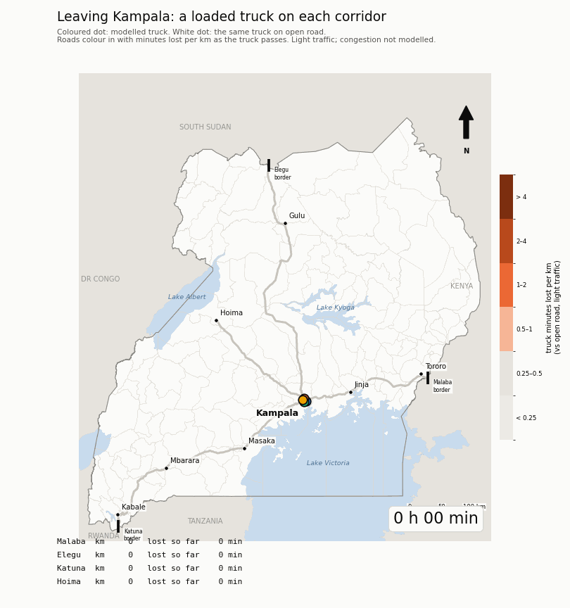
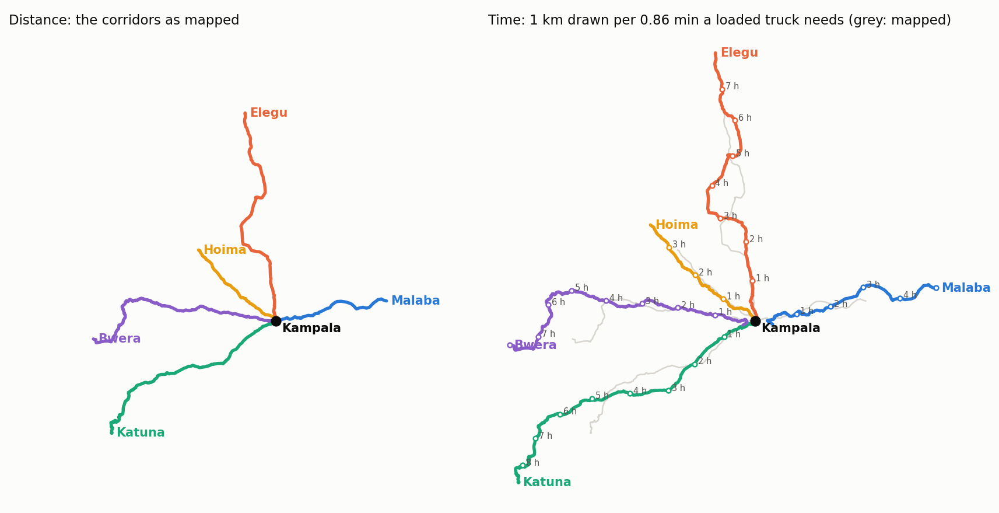
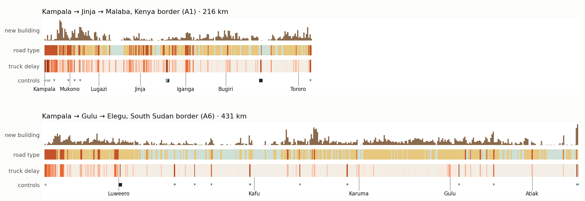
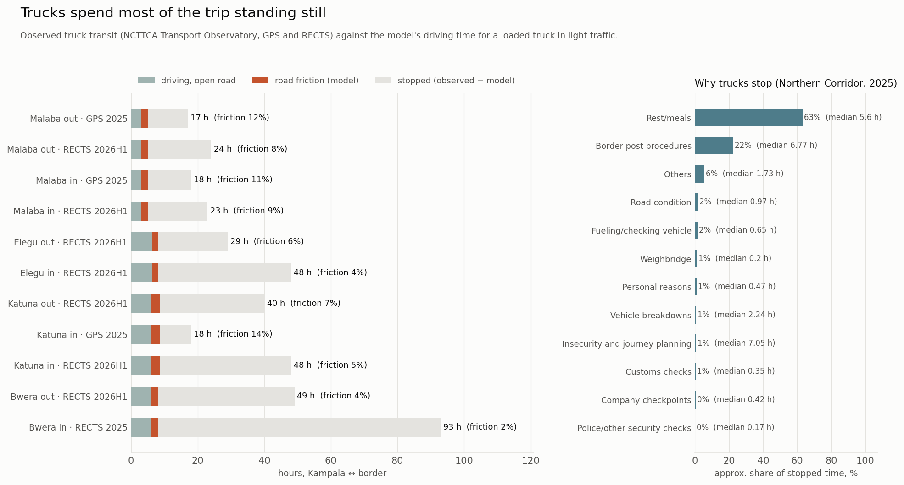
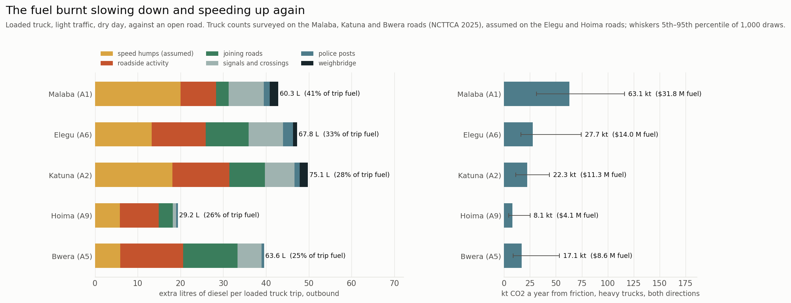
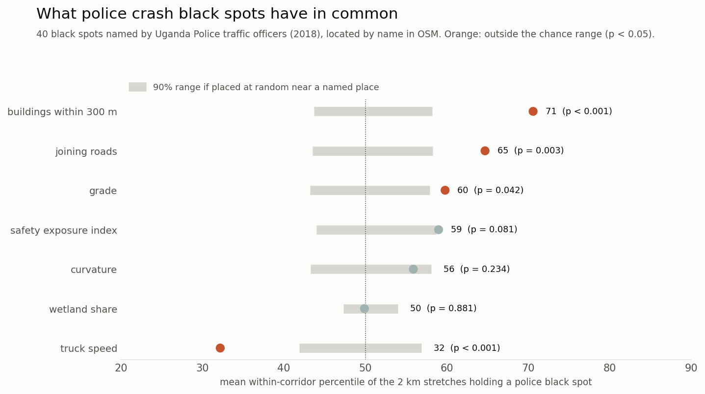
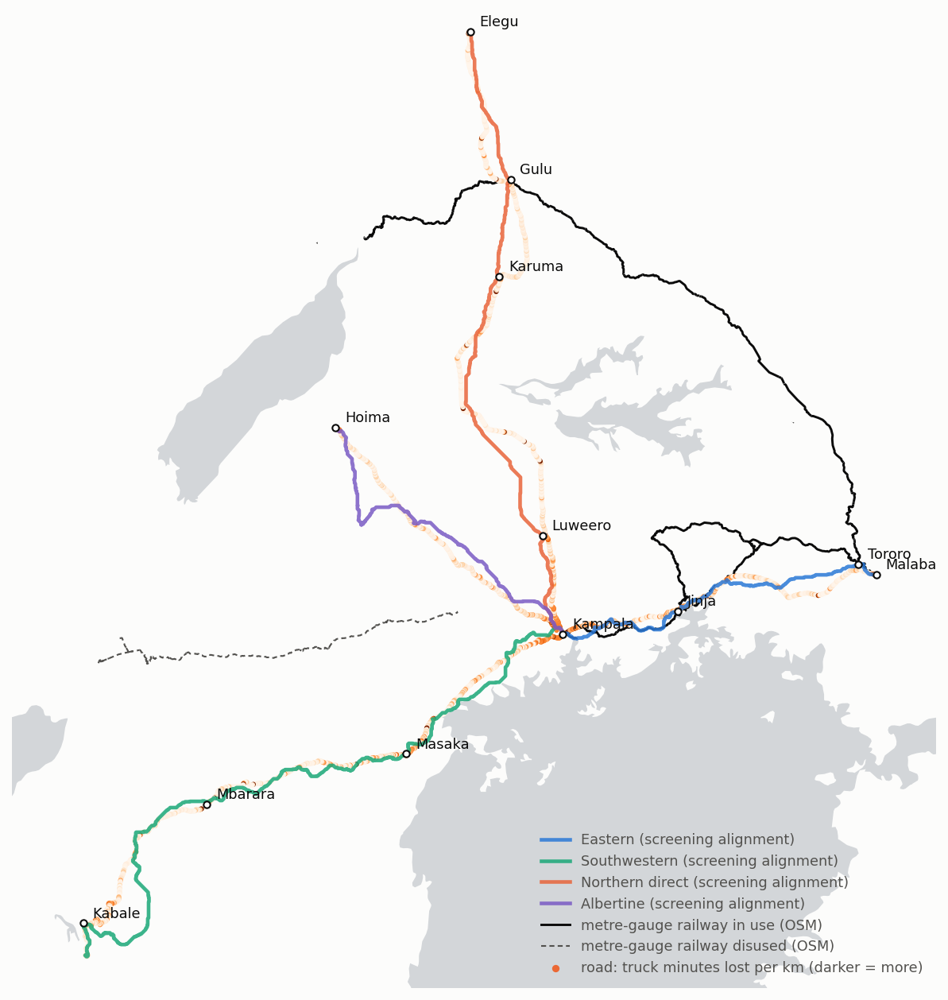

<title>Highways That Became High Streets</title>
<link rel="preconnect" href="https://fonts.googleapis.com">
<link rel="preconnect" href="https://fonts.gstatic.com" crossorigin>
<link rel="stylesheet" href="https://fonts.googleapis.com/css2?family=Overpass:wght@600;800;900&family=Overpass+Mono:wght@500&family=Source+Serif+4:ital,opsz,wght@0,8..60,400;0,8..60,600;1,8..60,400&display=swap">
<style>
/* One light look by design: every figure in this story is drawn on a light ground. */
:root {
  --paper: #f5f6f3; --plate: #fcfcfb; --ink: #17201d; --muted: #5a6763; --rule: #d9dfdb;
  --murram: #b8491c; --ochre: #c9901f; --sage: #6f9a80; --night: #17252a;
  color-scheme: light;
}
* { box-sizing: border-box; }
html, body { background: var(--paper); }
body { margin: 0; color: var(--ink); font: 19px/1.62 "Source Serif 4", Georgia, "Times New Roman", serif; }
.page { padding-inline: 20px; padding-block: 0 64px; }
.col { max-width: 680px; margin: 0 auto; }
.wide { max-width: 1120px; margin: 0 auto; }
.kicker { font: 800 13px/1 "Overpass", "Helvetica Neue", Arial, sans-serif; letter-spacing: .12em; text-transform: uppercase; color: var(--murram); }
h1, h2 { font-family: "Overpass", "Helvetica Neue", Arial, sans-serif; text-wrap: balance; letter-spacing: -.01em; }
h1 { font-weight: 900; font-size: clamp(38px, 7vw, 76px); line-height: .98; margin: 14px 0 18px; }
h2 { font-weight: 800; font-size: clamp(26px, 3.6vw, 36px); line-height: 1.1; margin: 0 0 14px; }
p { margin: 0 0 1em; }
.lede { font-size: 22px; color: var(--muted); max-width: 34em; }
header { padding-block: 56px 28px; }
section { padding-block: 48px; border-top: 1px solid var(--rule); }
figure { margin: 26px auto 0; }
figure img { display: block; width: 100%; height: auto; border-radius: 6px; background: var(--plate); border: 1px solid var(--rule); }
figcaption { font: 14px/1.5 "Overpass", Arial, sans-serif; color: var(--muted); margin-top: 8px; max-width: 70ch; }
.shield { display: inline-flex; align-items: center; gap: 6px; font: 800 14px/1 "Overpass", Arial, sans-serif; }
.shield b { display: inline-block; background: var(--night); color: #fff; border-radius: 4px; padding: 5px 7px 3px; letter-spacing: .03em; }
.roads { display: grid; grid-template-columns: repeat(auto-fit, minmax(230px, 1fr)); gap: 10px 22px; margin: 18px 0 4px;
  font: 15px/1.45 "Overpass", Arial, sans-serif; }
.roads div { display: grid; gap: 4px; }
.roads span { color: var(--muted); }
.figs { display: grid; grid-template-columns: repeat(auto-fit, minmax(190px, 1fr)); gap: 18px; margin: 26px 0 8px; }
.fig .n { font: 500 40px/1 "Overpass Mono", ui-monospace, monospace; color: var(--murram); font-variant-numeric: tabular-nums; }
.fig .k { font: 15px/1.4 "Overpass", Arial, sans-serif; color: var(--muted); margin-top: 6px; }
.two { display: grid; grid-template-columns: minmax(0, 1fr) minmax(0, 1fr); gap: 32px; align-items: start; }
@media (max-width: 820px) { .two { grid-template-columns: 1fr; } }
.fixes { font: 16px/1.4 "Overpass", Arial, sans-serif; display: grid; gap: 10px; margin-top: 18px; }
.fixrow { display: grid; grid-template-columns: minmax(0, 1fr) 110px 92px; gap: 12px; align-items: center; }
.fixrow .bar { height: 10px; background: #e6e9e6; border-radius: 3px; position: relative; }
.fixrow .bar i { position: absolute; inset: 0 auto 0 0; background: var(--ochre); border-radius: 3px; }
.fixrow .v { font-family: "Overpass Mono", monospace; text-align: right; white-space: nowrap; font-variant-numeric: tabular-nums; }
.fixrow small { display: block; color: var(--muted); font-size: 13.5px; }
@media (max-width: 480px) { .fixrow { grid-template-columns: minmax(0, 1fr) 84px; } .fixrow .bar { display: none; } }
.callout { background: var(--night); color: #eef2f0; border-radius: 8px; padding: 22px 24px; margin-top: 22px; }
.callout p { margin: 0; font-size: 18px; }
.callout b { color: #f0b48c; }
.links { font: 16px/1.6 "Overpass", Arial, sans-serif; }
a { color: var(--murram); text-underline-offset: 3px; }
a:focus-visible { outline: 2px solid var(--night); outline-offset: 2px; }
.fine { font: 14px/1.55 "Overpass", Arial, sans-serif; color: var(--muted); }
</style>

<main class="page">
  <header>
   <div class="col">
    <div class="kicker">Uganda's trade corridors · open data</div>
    <h1>Highways that became high streets</h1>
    <p class="lede">Uganda's freight rides on five roads out of Kampala. Along most of their length, those roads are now also the main street of a village. This is what that costs, where, and what might help.</p>
    <div class="roads">
      <div><span class="shield"><b>A1</b> Malaba</span><span>216 km to the Kenya border and the port of Mombasa</span></div>
      <div><span class="shield"><b>A6</b> Elegu</span><span>431 km north through Gulu to South Sudan</span></div>
      <div><span class="shield"><b>A2</b> Katuna</span><span>426 km through Masaka and Mbarara to Rwanda</span></div>
      <div><span class="shield"><b>A9</b> Hoima</span><span>194 km west to the Albertine oil region</span></div>
      <div><span class="shield"><b>A5</b> Bwera</span><span>418 km west through Fort Portal and Kasese to DR Congo</span></div>
    </div>
   </div>
    <figure class="wide">
      
      <figcaption>Twenty years of building beside each road's fastest-growing stretch, 2000–2020. Grey was built by 2000; each new frame adds five years (GHSL built-up surface).</figcaption>
    </figure>
  </header>

  <section>
    <div class="col">
      <h2>Most of the road is now a street</h2>
      <p>Cut each road into 500 m pieces and count what sits beside it: buildings, shops, junctions, schools, bus stops. Only a fifth to a third of each road is still open country. Between 56% and 74% runs through roadside settlement, where people cross, trade and turn onto the tarmac all day.</p>
      <div class="figs">
        <div class="fig"><div class="n">56–74%</div><div class="k">of each road runs through roadside settlement</div></div>
        <div class="fig"><div class="n">+27–68%</div><div class="k">more built-up land within 300 m of the road, 2000–2020</div></div>
        <div class="fig"><div class="n">1.2 million</div><div class="k">people live within 300 m of the five roads</div></div>
      </div>
    </div>
    <figure class="wide">
      
      <figcaption>The fastest-growing 5 km on each road. Grey: built by 2000. Orange: built between 2000 and 2020. Most new building is in settlements between towns, not in the towns themselves.</figcaption>
    </figure>
  </section>

  <section>
    <div class="col">
      <h2>It did not stop in 2020</h2>
      <p>Satellite building counts for every year from 2016 to 2023 show the roadside still filling in: 22–48% more buildings within 300 m of each road in seven years, two to four times the pace the older 2000–2020 record suggests. Land a kilometre or two back is filling in too, but the roadside gains roughly twice as many new buildings per square kilometre.</p>
      <p class="fine">Google Open Buildings 2.5D Temporal, a yearly model of building presence from Sentinel-2. Year-to-year values are noisy, so growth is a fitted trend; the jump around 2021–22 shows near the road and further back alike.</p>
    </div>
    <figure class="wide">
      
      <figcaption>Buildings within 300 m of each road, 2016 = 100, against land 1–2 km away (dashed), and growth by road type.</figcaption>
    </figure>
  </section>

  <section>
    <div class="two wide">
      <div>
        <h2>The same truck, five roads</h2>
        <p>A loaded truck on the Malaba road needs about five hours in light traffic. On open road it would need three. The two hours in between go on towns and markets, junctions, speed humps, signals, police posts and two weighbridges.</p>
        <p>Every road adds 29–64% to its open-road time this way: 119 extra truck minutes to Malaba, 107 to Elegu, 161 to Katuna, 59 to Hoima and 124 to Bwera, where the hills around Fort Portal add the most. A wet day adds another 24–53 truck minutes.</p>
        <p class="fine">Times come from a transparent model of every 500 m piece, checked against published trip times (Kampala to Gulu: 266 min modelled, 286 in routing estimates; to Kabale: 343 and 345; to Fort Portal the model is 15% fast, 228 against 269). Peak-hour congestion near Kampala is not in the model; observed Kampala–Jinja trips take 2–3 hours against the model's 1.5.</p>
      </div>
      <figure style="margin-top:0">
        
        <figcaption>A truck leaves Kampala on every corridor at once, next to the same truck on open road. The roads colour in with the delay they cause.</figcaption>
      </figure>
    </div>
  </section>

  <section>
    <div class="col">
      <h2>When distance becomes time</h2>
      <p>Redraw the map so that each road's length is the time a loaded truck needs, and the corridors stretch. Kampala's own edge, the towns along the Jinja road and the hills of the southwest pull the lines out furthest.</p>
    </div>
    <figure class="wide">
      
      <figcaption>Left: the roads as mapped. Right: the same roads with length set by modelled truck travel time; dots mark each hour.</figcaption>
    </figure>
  </section>

  <section>
    <div class="col">
      <h2>Where the time goes, kilometre by kilometre</h2>
      <p>Straighten a road into a line and the pattern shows. Delay clusters at Kampala's edge and in each town, with sharp spikes at weighbridges and a steady drag through the long settlement belts between towns. New building is spreading along those same belts.</p>
    </div>
    <figure class="wide">
      
      <figcaption>The Malaba and Elegu roads as lines. Top band: new building 2000–2020. Then road type (sage open, ochre settlement, red town), truck minutes lost per km, and controls. The explorer shows all five roads.</figcaption>
    </figure>
  </section>

  <section>
    <div class="col">
      <h2>Where fast trucks meet people</h2>
      <p>Towns have speed limits, so trucks slow down there. In the settlements between towns they still run at 55–60 km/h, past homes, schools and roadside stalls. Weight each stretch by the people living beside it, the trucks passing and the speed they pass at, and 65–79% of that exposure falls in the settlement belts.</p>
      <div class="figs">
        <div class="fig"><div class="n">65–79%</div><div class="k">of road-safety exposure is in settlements between towns</div></div>
        <div class="fig"><div class="n">688</div><div class="k">half-km stretches with a school, trucks above 50 km/h and no mapped crossing</div></div>
      </div>
      <p class="fine">Exposure is people within 300 m × trucks a day × (speed/50)⁴, a ranking of where crashes are likely to hurt most, not a count of crashes. Crossings are under-mapped in OpenStreetMap, so the school figure is an upper bound.</p>
    </div>
  </section>

  <section>
    <div class="col">
      <h2>What would help</h2>
      <p>The same model can run each fix and report the minutes it saves a truck leaving Kampala. The quickest wins are at controls. Weigh-in-motion scales, which pull in only the trucks likely to be overloaded, and fewer police stops save more per trip than bypasses do in light traffic.</p>
      <div class="fixes" role="list">
        <div class="fixrow" role="listitem"><span>Weigh-in-motion screening<small>where there are weighbridges (A1, A2, A6)</small></span><div class="bar"><i style="width:48%"></i></div><span class="v">8–16 min</span></div>
        <div class="fixrow" role="listitem"><span>No stops at police posts<small>range depends on how long stops really take</small></span><div class="bar"><i style="width:45%"></i></div><span class="v">4–15 min</span></div>
        <div class="fixrow" role="listitem"><span>Service roads through every settlement<small>124–281 km of new road per corridor</small></span><div class="bar"><i style="width:69%"></i></div><span class="v">10–23 min</span></div>
        <div class="fixrow" role="listitem"><span>Bypass the two worst towns<small>more if congestion were counted</small></span><div class="bar"><i style="width:12%"></i></div><span class="v">2–4 min</span></div>
      </div>
      <div class="callout"><p>At central estimates, the time lost costs heavy trucks about <b>US$41 million a year</b> on the five roads, $19 million of it on the Malaba road. Truck counts come from 2025 station surveys on the Malaba, Katuna and Bwera roads and are assumed on the other two, so treat the total as an order of magnitude.</p></div>
    </div>
  </section>

  <section>
    <div class="col">
      <h2>Trucks spend most of the trip standing still</h2>
      <p>The model gives the time a truck spends moving. The Northern Corridor Transport Observatory tracks what trucks actually take, from GPS units and electronic cargo seals. Between Kampala and the borders that is 17 to 93 hours, against five to nine hours of driving. Roadside and control friction is only 2–14% of the real trip. The rest is time parked: rest and meals, border procedures, security and company checks, breakdowns.</p>
      <div class="figs">
        <div class="fig"><div class="n">17–93 h</div><div class="k">observed truck transit, Kampala to a border, 2025–26</div></div>
        <div class="fig"><div class="n">12 min</div><div class="k">median weighbridge stop, matching the model's assumption</div></div>
      </div>
    </div>
    <figure class="wide">
      
      <figcaption>Observed truck transit against modelled driving time, and why trucks stop. Source: NCTTCA Transport Observatory Report 2025 and January–June 2026.</figcaption>
    </figure>
  </section>

  <section>
    <div class="col">
      <h2>The fuel burnt slowing down and speeding up</h2>
      <p>Every hump, junction and village crossing makes a 40-tonne truck brake and accelerate again. A physical fuel model on the same speed profile puts that at 29–75 extra litres of diesel per trip, a quarter to two fifths of the trip's fuel. Across the five roads it is roughly 140,000 tonnes of CO₂ and $70 million of diesel a year.</p>
      <p class="fine">Speed humps are assumed (one per town piece), so the Malaba road's figure, where they matter most, carries a wide range.</p>
    </div>
    <figure class="wide">
      
      <figcaption>Extra diesel per loaded truck trip from friction, by cause, and CO₂ a year from heavy trucks. Whiskers: 5th–95th percentile of 1,000 draws.</figcaption>
    </figure>
  </section>

  <section>
    <div class="two wide">
      <div>
        <h2>Where police see crashes</h2>
        <p>Uganda Police traffic officers have named the black spots on each highway. Forty of them can be placed on these roads. They sit where roadside building and joining roads are densest and trucks are slower than usual: busy trading centres, not fast open bends.</p>
        <p class="fine">Compared with random stretches near a named place, 5,000 times. The exposure ranking on the previous page weights truck speed heavily, so it points at these places less sharply (59th percentile, p = 0.08) than building density does (71st, p &lt; 0.001).</p>
      </div>
      <figure style="margin-top:0">
        
        <figcaption>Mean percentile of the stretches holding a police black spot, against the range expected by chance.</figcaption>
      </figure>
    </div>
  </section>

  <section>
    <div class="two wide">
      <div>
        <h2>Would a railway fix it?</h2>
        <p>The old metre-gauge railway, and the standard-gauge line now contracted between Malaba and Kampala, run right beside the worst of the Malaba road: 81% of its truck delay lies within 10 km of the line. On the other four roads, 16% or less does. Screening routes for the other roads show where a line could run, avoiding steep grades, lakes and built-up land.</p>
        <p>Rail alone does not pay back on Uganda's own freight. Over 200–250 km, loading and unloading at both ends cancels rail's lower price per tonne-km, and door to door the trip takes about 17 hours against 5 by truck. Even carrying transit freight on a continuous run from Mombasa, the eastern line would need about 93 million tonnes a year to cover its cost, roughly eleven times what the Malaba road carries today.</p>
        <p>Rail's case rests on regional transit growth, the unbuilt Kenyan link from Naivasha to Malaba, fewer trucks through settlements and lower emissions. Faster domestic freight is not part of it.</p>
      </div>
      <figure style="margin-top:0">
        
        <figcaption>Existing railway (black, dashed where disused) and least-cost screening alignments for each road. Screening routes, not engineering designs.</figcaption>
      </figure>
    </div>
  </section>

  <section>
    <div class="col">
      <h2>How this was measured</h2>
      <p class="fine">Open data only: OpenStreetMap roads and controls, 1.54 million Google Open Buildings footprints, the EU's GHSL built-up surface for 2000–2020, WorldPop 2025 population, Copernicus 30 m elevation and 20 years of CHIRPS rainfall. Truck transit times, stop reasons and station truck counts come from the Northern Corridor Transport Observatory, and crash black spots from Uganda Police. A travel-time model for a car and a loaded truck turns what is measured into minutes, with 1,000 random draws of every assumption. Congestion, crashes and the true number of speed humps are not in the data, and stop times at police posts and weighbridges are assumptions with wide ranges.</p>
      <p class="links">Explore every 500 m yourself in the <a target="_blank" rel="noopener" href="https://gavacharles.github.io/uganda-trade-corridors/">Uganda Corridor Explorer</a>. Code and data: <a target="_blank" rel="noopener" href="https://github.com/gavacharles/uganda-trade-corridors">github.com/gavacharles/uganda-trade-corridors</a>.</p>
    </div>
  </section>
</main>
